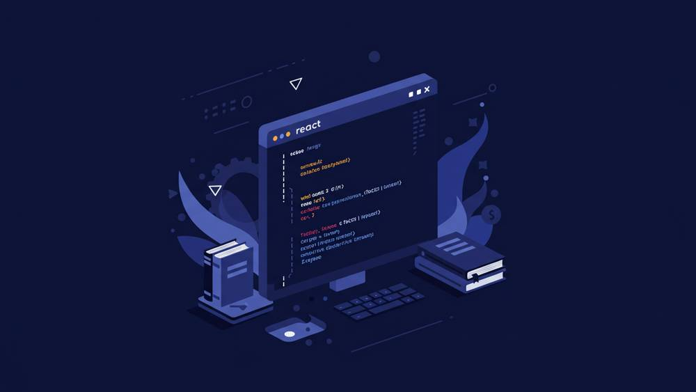
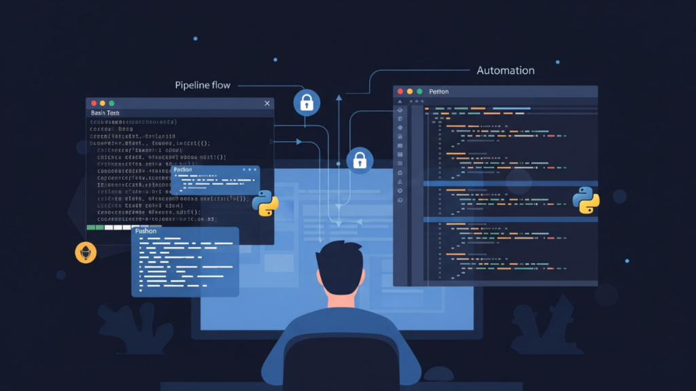
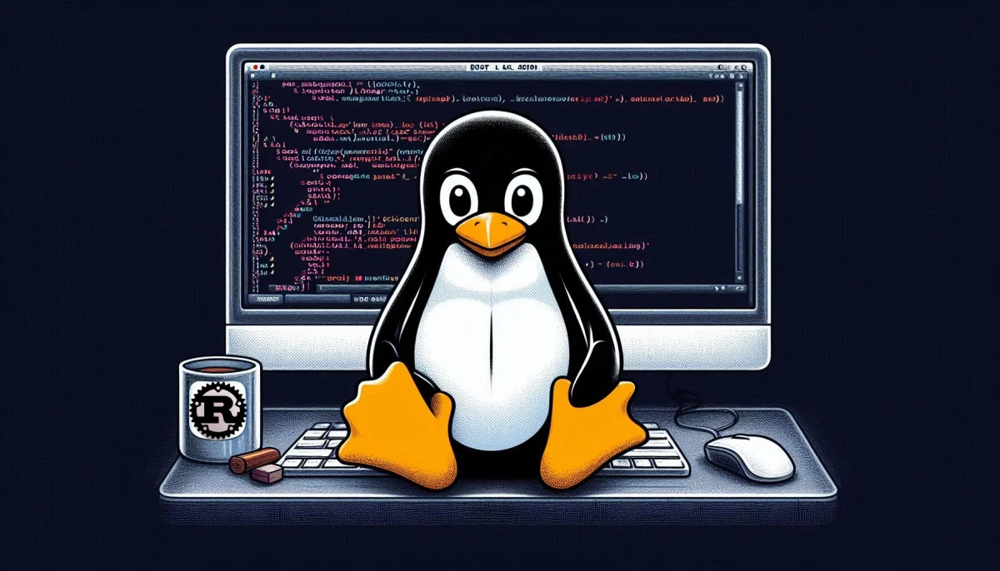
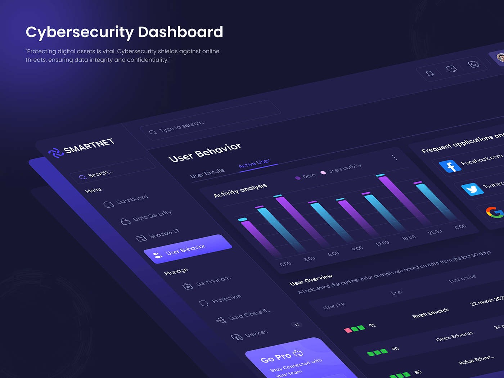
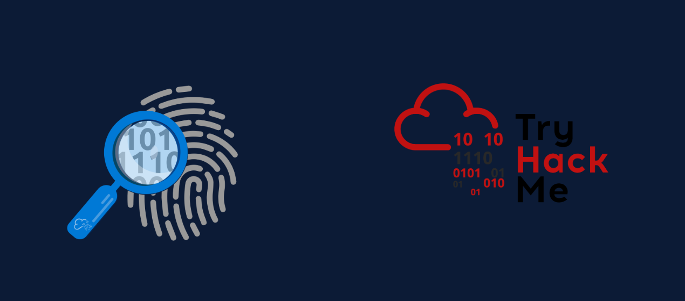

Operating Systems
Windows · Linux · Ubuntu · Kali Linux
Basic system administration and command-line usage.IT SECURITY SPECIALIST STUDENT
Currently studying IT Security at IT-Högskolan in Stockholm, while developing my technical skills through hands-on labs, personal projects and continuous learning.
I am an IT Security Specialist student with a strong interest in cybersecurity, particularly security operations, vulnerability analysis and infrastructure security. Through my studies and independent projects, I have gained hands-on experience with Python, Windows, Linux, VMware and network configuration.
I enjoy learning by doing and continuously expanding my technical knowledge. I have built my own virtual lab environment, worked with SIEM solutions, explored web application security through OWASP Juice Shop and developed my skills through platforms such as TryHackMe and LinkedIn Learning.
Before transitioning into IT, I spent approximately ten years working within the Swedish justice system as an administrative officer / court officer. This experience has shaped me into a structured, analytical and detail-oriented professional, with a strong sense of responsibility and experience handling sensitive information. I bring that same approach to my development within cybersecurity.
Thank you for taking the time to visit my portfolio and learn more about me. You can also explore my projects and code on GitHub, where I share my work and ongoing development.
My education, courses and ongoing technical development.
A growing technical foundation developed through coursework, personal labs and independent learning.
Windows · Linux · Ubuntu · Kali Linux
Basic system administration and command-line usage.VMware · VirtualBox
Building and managing a personal virtual lab environment.TCP/IP · DNS · DHCP · Ports · Protocols
Basic network configuration and troubleshooting.Windows Server · Active Directory · GPO
Working with users, groups, permissions and policies in a lab.Burp Suite · OWASP Juice Shop
Exploring vulnerabilities in controlled environments.Elastic · Kibana · Elastic Agent
Basic log collection, monitoring and event investigation.Python · pytest · Git · GitHub
Basic programming, file handling, data processing and testing.SQL Injection · XSS · Authentication
Learning common vulnerabilities and security principles.Technical concepts, notes and lessons learned throughout my cybersecurity journey.
Understanding how improperly handled user input can manipulate database queries.
PRACTICED IN LABLearning how malicious scripts can be injected into web pages and executed in a user's browser.
LEARNINGExploring how attackers can trick authenticated users into performing unwanted actions.
LEARNINGExploring TCP/IP, DNS, ports, protocols and basic network communication.
BASIC KNOWLEDGEExploring how system events can be collected, monitored and investigated using SIEM tools.
HANDS-ON PRACTICELearning how unsafe handling of user input can lead to unintended command execution.
LEARNINGCompleted courses and continuous learning through LinkedIn Learning and other platforms.

Instructor: Kevin Skoglund

Instructor: Nick Walter

Instructor: Scott Simpson

Instructor: Hack The Box

Platform: TryHackMe
Interested in cybersecurity, security research or potential LIA opportunities? Feel free to connect.
Available for internship opportunities in cybersecurity.
LIA 1: August – October 2027